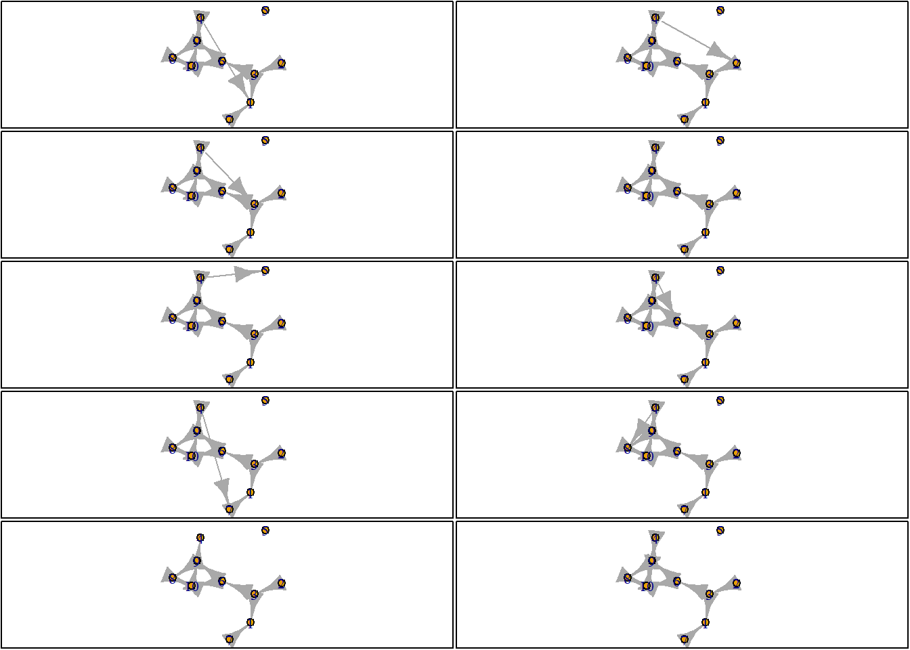
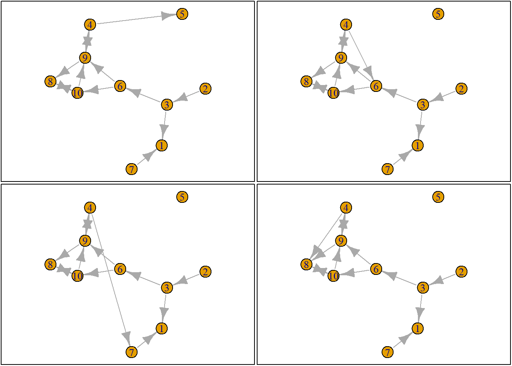
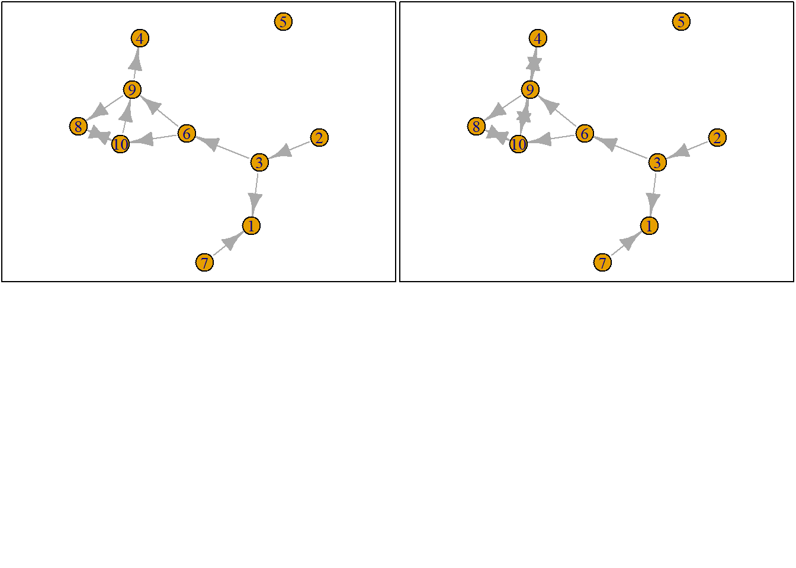

Chapter 7 Methods
There are many methods for analyzing the four theoretical dimensions of social networks (i.e., size, composition, structure, evolution).
If we focus on the explanation of the micro-mechanisms that bring about the structure of a social network, I would say there are two main flavors within the social sciences:
- Exponential-family Random Graph Models: estimated for example with
ergmsee the statnet website.
- Stochastic Actor Orientated Models: estimated for example with
RSienasee the Siena main page
For a comparison of the two approaches and some advice on which method to choose see (Block, Stadtfeld, and Snijders 2019).
Ideally, you should try to test your hypotheses with both methods. And if results differ across models, …well try to understand why they do.
In what follows I will focus on RSiena and I have several reasons for this:
- We can use the micro-mechanism not only to explain the evolution of network structure but also of network composition. Phrased otherwise, with this method (and the right type of data) it is possible to distinguish between selection and influence processes
- I have way more expertise with RSiena than with ergm14
- I think this book has something to add to the current Tutorials for and introductions of RSiena.
7.1 Goal
The goal of this chapter is that after reading it you understand the very basics of RSiena and are able to read and understand the manual and that you can follow the different tutorials on RSiena on the RSiena website (for .rmd style see here).
7.2 Getting started
Start with clean workspace
7.2.1 Custom functions
fpackage.check: Check if packages are installed (and install if not) in R (source).
fsave: Save to processed data in repository
fload: To load the files back after anfsave
fshowdf: To print objects (tibbles / data.frame) nicely on screen in .rmd
fpackage.check <- function(packages) {
lapply(packages, FUN = function(x) {
if (!require(x, character.only = TRUE)) {
install.packages(x, dependencies = TRUE)
library(x, character.only = TRUE)
}
})
}
fsave <- function(x, file = NULL, location = "./data/processed/") {
ifelse(!dir.exists("data"), dir.create("data"), FALSE)
ifelse(!dir.exists("data/processed"), dir.create("data/processed"), FALSE)
if (is.null(file))
file = deparse(substitute(x))
datename <- substr(gsub("[:-]", "", Sys.time()), 1, 8)
totalname <- paste(location, datename, file, ".rda", sep = "")
save(x, file = totalname) #need to fix if file is reloaded as input name, not as x.
}
fload <- function(filename) {
load(filename)
get(ls()[ls() != "filename"])
}
fshowdf <- function(x, ...) {
knitr::kable(x, digits = 2, "html", ...) %>%
kableExtra::kable_styling(bootstrap_options = c("striped", "hover")) %>%
kableExtra::scroll_box(width = "100%", height = "300px")
}7.2.2 packages
RSiena: what do you think?RsienaTwoStep: this packages assesses the ministep assumption of RSiena but is useful for this tutorial
devtools: to load from github
igraph: plotting tools. For a tutorial on plotting networks, see our chapter in SNASS
packages = c("RSiena", "devtools", "igraph")
fpackage.check(packages)
# devtools::install_github('JochemTolsma/RsienaTwoStep', build_vignettes=TRUE)
packages = c("RsienaTwoStep")
fpackage.check(packages)7.3 The logic of SAOMs
See (Ripley et al. 2022) paragraph 2.1
7.4 RSiena as ABM
RSiena models the evolution of network structures and/or the behavior of the social agents. It takes the situation of the network observed at \(T_0\) as starting point. It estimates the ‘rules’ for the agents how to change their ties and/or behavior. If the model is specified correctly, these rules (or micro mechanisms) have led the situation at wave \(T_0\) to evolve into the situation observed at wave \(T_1\).
I would say these ‘rules’ are our micro theory of action.
Please note that our behavior may depend on the situation we are in. Similarly, the ‘rules’ we discover with RSiena are thus conditional on the situation at wave \(T_0\).
If we know the ‘rules’ of the social agents, we can also simulate future networks. And I think this aspect will help us to understand what the ‘rules’ of the social agents are and to understand what is estimated by RSiena.
7.4.1 RSiena’s ministep
Before we can start to simulate or understand RSiena we need to know what is meant by the ministep assumption.
Let us quote the manual
The Stochastic Actor-Oriented Model can be regarded as an agent-based (‘actorbased’) simulation model of the network evolution; where all network changes are decomposed into very small steps, so-called ministeps, in which one actor creates or terminates one outgoing tie. … …it does not necessarily reflect a commitment to or belief in any particular theory of action elaborated in the scientific disciplines. … It is assumed that actors change their scores on the dependent variable (tie or behavior) such that they improve their total satisfaction […] with her/his local network neighborhood configuration. … Actors only evaluate all possible results in the local network neighborhood configurations that result from one ministep.
Thus, what does the SAOM of RSiena not do??:
- No re-activity15: The act of re-affirming, making or breaking an outgoing tie does not trigger a response by the involved alter
- No simultaneity: Changes occur one by one.
- Hence also no cooperation;
- no coordination;
- no negotiation
- Hence also no cooperation;
- No maximization of total utility:
- No altruistic behavior: Individual utility is maximized, not total utility
- No altruistic behavior: Individual utility is maximized, not total utility
- No strategic behavior:
- Very finite time horizon. Agent does not predict how his/her future local network neighborhood may change after:
- Making another ministep him/herself
- A ministep of other agents
- Making another ministep him/herself
- Hence also no investments
- Very finite time horizon. Agent does not predict how his/her future local network neighborhood may change after:
This does not mean that RSiena cannot estimate (or better: ‘fit’) the evolution of networks/behavior that are the consequences of these more complex ‘rules’ or micro theories but it does so by assuming actors only make ministeps.16
7.5 Simulation Logic
- Sample ego
- Construct possible alternative future networks based on all possible ministeps of ego
- Calculate how sampled ego evaluates these possible networks
- Let the ego pick a network, that is, let agent decide on a tie-change
- GOTO 1 (STOPPING RULE: until you think we have made enough ministeps)
7.5.1 Sample an ego
Let us first start with a network. We will use the build in network of RsienaTwoStep, namely ts_net1.
This is what the adjacency matrix looks like:
#> [,1] [,2] [,3] [,4] [,5] [,6] [,7] [,8] [,9] [,10]
#> [1,] 0 0 0 0 0 0 0 0 0 0
#> [2,] 0 0 1 0 0 0 0 0 0 0
#> [3,] 1 0 0 0 0 1 0 0 0 0
#> [4,] 0 0 0 0 0 0 0 0 1 0
#> [5,] 0 0 0 0 0 0 0 0 0 0
#> [6,] 0 0 0 0 0 0 0 0 1 1
#> [7,] 1 0 0 0 0 0 0 0 0 0
#> [8,] 0 0 0 0 0 0 0 0 0 1
#> [9,] 0 0 0 1 0 0 0 1 0 0
#> [10,] 0 0 0 0 0 0 0 1 1 0Naturally, we can also plot ts_net1.
net1g <- graph_from_adjacency_matrix(ts_net1, mode = "directed")
coords <- layout_(net1g, nicely()) #let us keep the layout
par(mar = c(0.1, 0.1, 0.1, 0.1))
{
plot.igraph(net1g, layout = coords)
graphics::box()
}Figure 7.1: ts_net1
So only one actor is allowed to make one ministep. But who? This is determined by the rate function and it may depend on ego-characteristics of our social agents (e.g. male/female) and/or on structural-characteristics of our social agents (e.g. indegree, outdegree). And all this can be estimated within RSiena. More often than note, we simply assume that all actors have an equal chance of being selected to make a ministep.
For more information on the rate function see (#rp).
Okay, we can thus randomly select/sample an agent.
set.seed(24553253)
ego <- ts_select(net = ts_net1, steps = 1) #in rsienatwostep two actors may make a change together but here not
ego#> [1] 47.5.2 Possible networks after ministep
Let us suppose we want to know what the possible networks are after all possible ministeps of ego who is part of ts_net1. That is, let us assume that it is ego’s turn (ego#: 4) to decide on tie-change. What are the possible networks?
The function ts_alternatives_ministep() returns a list of all possible networks after all possible tie-changes available to an ego given the current network.
options <- ts_alternatives_ministep(net = ts_net1, ego = ego)
# options
plots <- lapply(options, graph_from_adjacency_matrix, mode = "directed")
par(mar = c(0, 0, 0, 0) + 0.1)
par(mfrow = c(2, 2))
fplot <- function(x) {
plot.igraph(x, layout = coords, margin = 0)
graphics::box()
}
lapply(plots, fplot)
7.5.3 Network statistics
Which option will ego choose? Naturally this will depend on which network characteristics (or statistics), \(s_i\) ego finds relevant. Let us suppose that ego bases its decision solely on the number of ties it sends to others and the number of reciprocated ties it has with others.
Let us count the number of ties ego sends to alters.
#> [1] 2#> [[1]]
#> [1] 2
#>
#> [[2]]
#> [1] 2
#>
#> [[3]]
#> [1] 2
#>
#> [[4]]
#> [1] 1
#>
#> [[5]]
#> [1] 2
#>
#> [[6]]
#> [1] 2
#>
#> [[7]]
#> [1] 2
#>
#> [[8]]
#> [1] 2
#>
#> [[9]]
#> [1] 0
#>
#> [[10]]
#> [1] 2And let us count the number of reciprocated ties
#> [[1]]
#> [1] 1
#>
#> [[2]]
#> [1] 1
#>
#> [[3]]
#> [1] 1
#>
#> [[4]]
#> [1] 1
#>
#> [[5]]
#> [1] 1
#>
#> [[6]]
#> [1] 1
#>
#> [[7]]
#> [1] 1
#>
#> [[8]]
#> [1] 1
#>
#> [[9]]
#> [1] 0
#>
#> [[10]]
#> [1] 1In the package RsienaTwoStep there are functions for the following network statistics \(s\):
- degree:
ts_degree() - reciprocity:
ts_recip()
- outdegree activity:
ts_outAct() - indegree activity:
ts_inAct() - outdegree popularity:
ts_outPop() - indegree popularity:
ts_inPop()
- transitivity:
ts_transTrip() - mediated transitivity:
ts_transMedTrip()
- transitive reciprocated triplets:
ts_transRecTrip() - number of three-cycles:
ts_cycle3()
Update: there are quite a lot more. But not very relevant for us at this time.
See Ripley et al. (2022) (Chapter 12) for the mathematical formulation. Naturally, you are free to define your own network statistics.
7.5.4 Evaluation function
But what evaluation value does ego attach to these network statistics and consequently to the network (in its vicinity) as a whole? Well these are the parameters, \(\beta_i\), you will normally estimate with RSiena::siena07().
Let us suppose the importance for:
- the statistic ‘degree’, \(\beta_1\), is -1
- for the statistic ‘reciprocity’, \(\beta_2\), is 1.5.
So you could calculate the evaluation of the network saved in options[[4]] by hand:
\[f_{i}(x) = \Sigma_k\beta_ks_{ik}(x) ,\]
with \(f_{i}\) the evaluation function for agent \(i\). \(s_{ik}(x)\) are the network statistics \(k\) for network \(x\) and actor \(i\) and \(\beta_k\) the corresponding parameters (or importance).
option <- 4
ts_degree(options[[option]], ego = ego) * -1 + ts_recip(options[[option]], ego = ego) * 1.5#> [1] 0.5Or you could use the ts_eval().
eval <- ts_eval(net = options[[option]], ego = ego, statistics = list(ts_degree, ts_recip), parameters = c(-1,
1.5))
eval#> [1] 0.5Now, let us calculate the evaluation of all possible networks:
eval <- sapply(options, FUN = ts_eval, ego = ego, statistics = list(ts_degree, ts_recip), parameters = c(-1,
1.5))
eval
print("network with maximum evaluation score:")
which.max(eval)#> [1] -0.5 -0.5 -0.5 0.5 -0.5 -0.5 -0.5 -0.5 0.0 -0.5
#> [1] "network with maximum evaluation score:"
#> [1] 47.5.5 Choice function
So which option will ego choose? Naturally this will be a stochastic process. But we see that option 4 has the highest evaluation. We use McFadden’s choice function (for more information see wiki), that is let \(P_{i,a=2}\) be the probability that ego \(i\) chooses network/alternative 2 (\(x_{a=2}\)). The choice function is then given by:
\[P_{i,a=2} = \frac{exp(f_i(x_{2}))}{\Sigma_{a=1}^A exp(f_i(x_a))},\]
Let us force ego to make a decision.
choice <- sample(1:length(eval), size = 1, prob = exp(eval)/sum(exp(eval)))
print("choice:")
choice
# print('network:') options[[choice]]#> [1] "choice:"
#> [1] 10If we repeat this process, that is…:
- sample agent
- construct possible alternative networks
- calculate how sampled agent evaluates the possible networks
- Let the agent pick a network, that is, let agent decide on a tie-change
- GO BACK TO 1 (STOPPING RULE: until you think we have made enough ministeps)
…we have an agent based model.
7.5.6 Stopping rule
But how many ministeps do we allow? Well, normally this is estimated by siena07 by the rate parameter.17 If we do not make this rate parameter conditional on actor covariates or on network characteristics, the rate parameter can be interpreted as the average number of ministeps each actor in the network is allowed to make before time is up. Let us suppose the rate parameter is 2 . Thus in total the number of possible ministeps will be nrow(ts_net1) * rate: 20. For a more detailed - and more correct - interpretation of the rate parameter in siena07 see below.
7.6 Simulation example
Let us now simulate how the network could evolve given:18
- starting point is
ts_net1 - rate is set to 2
- we as scientists think only network statistics degree and reciprocity are important
RSiena::siena07has determined the parameters for these statistics are -1 and 1.5 respectively
- We adhere to the ministep assumption and hence set
p2steptoc(1,0,0)
rate <- 2
degree <- -1
recip <- 1.5
ts_sims(nsims = 1, net = ts_net1, startvalues = c(rate, degree, recip), statistics = list(ts_degree,
ts_recip), p2step = c(1, 0, 0), chain = FALSE) #not that rate parameter is automatically included. #> [1] "nsim: 1"#> [[1]]
#> [,1] [,2] [,3] [,4] [,5] [,6] [,7] [,8] [,9] [,10]
#> [1,] 0 0 0 0 1 1 0 0 0 0
#> [2,] 0 0 1 0 0 1 0 0 0 0
#> [3,] 0 0 0 0 1 1 0 0 0 0
#> [4,] 0 0 0 0 0 1 0 0 1 1
#> [5,] 0 0 0 0 0 0 0 0 0 0
#> [6,] 0 0 0 0 0 0 0 0 1 1
#> [7,] 0 0 0 0 0 0 0 0 0 0
#> [8,] 0 0 0 0 0 0 0 0 0 0
#> [9,] 1 0 0 1 0 0 0 0 0 0
#> [10,] 0 0 0 0 0 0 0 1 0 07.7 Estimation logic
So now you have some grasp of the logic of RSiena. But how does the estimation work?
Well, that is quite complicated. But it goes something like this:19
- Define model: researcher includes effects
- initial parameter values of effects (commonly ‘0’)
- simulate an outcome network based on these parameter values
- compare the network statistics of the simulated outcome network with the observed outcome network (i.e. the target values)
- based on the included effects. Thus the simulated network may contain 10 ties, but the observed network may contain 20 ties. Apparently, with the current parameter values we underestimate the density of the outcome network.
- based on the included effects. Thus the simulated network may contain 10 ties, but the observed network may contain 20 ties. Apparently, with the current parameter values we underestimate the density of the outcome network.
- tweak/update parameter values in some smart way
- GOTO 3 (BREAK RULE: until parameter values cannot be improved anymore / or reached good fit)
- simulate a bunch of outcome networks with the obtained parameter values and compare the expected values of statistics of the outcome networks with the target values.
- we can assess the fit
- estimate SE of the parameters
- we can assess the fit
Let us suppose network s501 developed into s502. For more information on these networks see ?s501.
To estimate this network with ts_estim20, we can do the following:
# we do not calculate SE for now.
ans <- ts_estim(net1 = s501, net2 = s502, statistics = list(ts_degree, ts_recip), p2step = c(1, 0, 0),
conv = 0.01, verbose = FALSE)Let us have a look at the final results:
#> rate degree recip
#> 5.071705 -2.207873 2.418046How to interpret these numbers??
7.8 Interpretation of parameters
7.8.1 Rate parameter
The estimated rate parameter has a nice interpretation: the estimated rate parameter refers to the expected number of opportunities for change per actor in a time period.
Let me try to explain.
The rate function of actor i is denoted:
\[ \lambda_i(x) \]
Suppose we have three actors: i, j and k. And suppose that the rate function is a constant, thus the rate function does not depend on the network structure or attributes of the actors. Thus suppose for example:
- \(\lambda_i=5\)
- \(\lambda_j=10\)
- \(\lambda_k=15\)
The waiting times of actors i, j and k are exponentially distributed with rate parameter \(\lambda\). What do these exponential distribution look like?
par(mfrow = c(1, 3))
dist_5 <- rexp(10000, rate = 5)
hist(dist_5, main = "rate = lambda_i = 5", freq = FALSE, xlab = "waiting times", xlim = c(0, 2), ylim = c(0,
9))
abline(v = 1/5, col = "red")
dist_10 <- rexp(10000, rate = 10)
hist(dist_10, main = "rate= lambda_j = 10", freq = FALSE, xlab = "waiting times", xlim = c(0, 2), ylim = c(0,
9))
abline(v = 1/10, col = "red")
dist_15 <- rexp(10000, rate = 15)
hist(dist_10, main = "rate = lambda_k = 15", freq = FALSE, xlab = "waiting times", xlim = c(0, 2), ylim = c(0,
9))
abline(v = 1/15, col = "red")Figure 7.2: Rate parameters and waiting times
We now want to determine who will be allowed to take the next ministep. We thus need to sample a waiting time for each actor. Thus each actor gets a waiting time sampled from the exponential distribution with the specified rate parameter:
set.seed(34641)
waitingtimes <- NA
waitingtimes[1] <- rexp(1, rate = 5)
waitingtimes[2] <- rexp(1, rate = 10)
waitingtimes[3] <- rexp(1, rate = 15)
print(paste("waitingtime_", c("i: ", "j: ", "k: "), round(waitingtimes, 3), sep = ""))#> [1] "waitingtime_i: 0.264" "waitingtime_j: 0.414" "waitingtime_k: 0.028"Actor k has the shortest waiting time and is allowed to take a ministep. In the example above we only took one draw out of each exponential distribution. If we would take many draws the expected value of the waiting time is \(\frac{1}{\lambda}\) and these values are added as vertical lines in the figure above. Thus with a higher rate parameter \(\lambda\) the shorter the expected waiting time.
Now let us repeat this process of determining who is allowed to take a ministep a couple of times and keep track of who will make the ministep and the time that has passed:
set.seed(245651)
sam_waitingtimes <- NA
time <- 0
for (ministeps in 1:50) {
waitingtimes <- NA
waitingtimes[1] <- rexp(1, rate = 5)
waitingtimes[2] <- rexp(1, rate = 10)
waitingtimes[3] <- rexp(1, rate = 15)
actor <- which(waitingtimes == min(waitingtimes))
time <- time + waitingtimes[actor]
sam_waitingtimes[ministeps] <- waitingtimes[actor]
print(paste("ministep nr.: ", ministeps, sep = ""))
print(paste("waitingtime_", c("i: ", "j: ", "k: ")[actor], round(waitingtimes, 3)[actor], sep = ""))
print(paste("time past: ", round(time, 3), sep = ""))
}#> [1] "ministep nr.: 1"
#> [1] "waitingtime_i: 0.012"
#> [1] "time past: 0.012"
#> [1] "ministep nr.: 2"
#> [1] "waitingtime_k: 0.003"
#> [1] "time past: 0.014"
#> [1] "ministep nr.: 3"
#> [1] "waitingtime_k: 0.013"
#> [1] "time past: 0.027"
#> [1] "ministep nr.: 4"
#> [1] "waitingtime_i: 0"
#> [1] "time past: 0.027"
#> [1] "ministep nr.: 5"
#> [1] "waitingtime_j: 0.052"
#> [1] "time past: 0.08"
#> [1] "ministep nr.: 6"
#> [1] "waitingtime_j: 0.073"
#> [1] "time past: 0.153"
#> [1] "ministep nr.: 7"
#> [1] "waitingtime_k: 0.054"
#> [1] "time past: 0.207"
#> [1] "ministep nr.: 8"
#> [1] "waitingtime_i: 0.016"
#> [1] "time past: 0.223"
#> [1] "ministep nr.: 9"
#> [1] "waitingtime_k: 0.006"
#> [1] "time past: 0.229"
#> [1] "ministep nr.: 10"
#> [1] "waitingtime_k: 0.019"
#> [1] "time past: 0.248"
#> [1] "ministep nr.: 11"
#> [1] "waitingtime_k: 0.044"
#> [1] "time past: 0.292"
#> [1] "ministep nr.: 12"
#> [1] "waitingtime_k: 0.024"
#> [1] "time past: 0.316"
#> [1] "ministep nr.: 13"
#> [1] "waitingtime_i: 0.022"
#> [1] "time past: 0.338"
#> [1] "ministep nr.: 14"
#> [1] "waitingtime_k: 0.038"
#> [1] "time past: 0.376"
#> [1] "ministep nr.: 15"
#> [1] "waitingtime_i: 0.027"
#> [1] "time past: 0.403"
#> [1] "ministep nr.: 16"
#> [1] "waitingtime_k: 0.002"
#> [1] "time past: 0.405"
#> [1] "ministep nr.: 17"
#> [1] "waitingtime_i: 0.045"
#> [1] "time past: 0.45"
#> [1] "ministep nr.: 18"
#> [1] "waitingtime_k: 0.023"
#> [1] "time past: 0.473"
#> [1] "ministep nr.: 19"
#> [1] "waitingtime_i: 0"
#> [1] "time past: 0.474"
#> [1] "ministep nr.: 20"
#> [1] "waitingtime_i: 0.024"
#> [1] "time past: 0.498"
#> [1] "ministep nr.: 21"
#> [1] "waitingtime_k: 0.013"
#> [1] "time past: 0.511"
#> [1] "ministep nr.: 22"
#> [1] "waitingtime_j: 0.018"
#> [1] "time past: 0.529"
#> [1] "ministep nr.: 23"
#> [1] "waitingtime_j: 0.027"
#> [1] "time past: 0.556"
#> [1] "ministep nr.: 24"
#> [1] "waitingtime_j: 0.061"
#> [1] "time past: 0.617"
#> [1] "ministep nr.: 25"
#> [1] "waitingtime_k: 0.018"
#> [1] "time past: 0.635"
#> [1] "ministep nr.: 26"
#> [1] "waitingtime_j: 0.097"
#> [1] "time past: 0.732"
#> [1] "ministep nr.: 27"
#> [1] "waitingtime_j: 0.007"
#> [1] "time past: 0.739"
#> [1] "ministep nr.: 28"
#> [1] "waitingtime_j: 0.009"
#> [1] "time past: 0.748"
#> [1] "ministep nr.: 29"
#> [1] "waitingtime_k: 0.001"
#> [1] "time past: 0.75"
#> [1] "ministep nr.: 30"
#> [1] "waitingtime_j: 0.009"
#> [1] "time past: 0.759"
#> [1] "ministep nr.: 31"
#> [1] "waitingtime_i: 0.012"
#> [1] "time past: 0.77"
#> [1] "ministep nr.: 32"
#> [1] "waitingtime_i: 0.056"
#> [1] "time past: 0.826"
#> [1] "ministep nr.: 33"
#> [1] "waitingtime_k: 0.031"
#> [1] "time past: 0.857"
#> [1] "ministep nr.: 34"
#> [1] "waitingtime_j: 0.051"
#> [1] "time past: 0.908"
#> [1] "ministep nr.: 35"
#> [1] "waitingtime_k: 0.014"
#> [1] "time past: 0.923"
#> [1] "ministep nr.: 36"
#> [1] "waitingtime_j: 0.021"
#> [1] "time past: 0.943"
#> [1] "ministep nr.: 37"
#> [1] "waitingtime_k: 0.021"
#> [1] "time past: 0.965"
#> [1] "ministep nr.: 38"
#> [1] "waitingtime_k: 0.059"
#> [1] "time past: 1.024"
#> [1] "ministep nr.: 39"
#> [1] "waitingtime_k: 0.029"
#> [1] "time past: 1.053"
#> [1] "ministep nr.: 40"
#> [1] "waitingtime_j: 0.013"
#> [1] "time past: 1.065"
#> [1] "ministep nr.: 41"
#> [1] "waitingtime_j: 0.044"
#> [1] "time past: 1.11"
#> [1] "ministep nr.: 42"
#> [1] "waitingtime_k: 0.069"
#> [1] "time past: 1.178"
#> [1] "ministep nr.: 43"
#> [1] "waitingtime_i: 0.066"
#> [1] "time past: 1.244"
#> [1] "ministep nr.: 44"
#> [1] "waitingtime_j: 0.003"
#> [1] "time past: 1.248"
#> [1] "ministep nr.: 45"
#> [1] "waitingtime_j: 0.01"
#> [1] "time past: 1.258"
#> [1] "ministep nr.: 46"
#> [1] "waitingtime_k: 0.086"
#> [1] "time past: 1.343"
#> [1] "ministep nr.: 47"
#> [1] "waitingtime_k: 0.046"
#> [1] "time past: 1.389"
#> [1] "ministep nr.: 48"
#> [1] "waitingtime_k: 0.031"
#> [1] "time past: 1.42"
#> [1] "ministep nr.: 49"
#> [1] "waitingtime_i: 0.007"
#> [1] "time past: 1.427"
#> [1] "ministep nr.: 50"
#> [1] "waitingtime_j: 0.066"
#> [1] "time past: 1.493"I know you are wondering what the distribution of sampled waiting times look like, don’t you? Well let’s sample some more and plot them.
set.seed(245651)
sam_waitingtimes <- NA
for (ministeps in 1:5000) {
waitingtimes <- NA
waitingtimes[1] <- rexp(1, rate = 5)
waitingtimes[2] <- rexp(1, rate = 10)
waitingtimes[3] <- rexp(1, rate = 15)
actor <- which(waitingtimes == min(waitingtimes))
sam_waitingtimes[ministeps] <- waitingtimes[actor]
}
par(mfrow = c(1, 2))
hist(sam_waitingtimes, freq = FALSE, xlab = "waiting times", main = "sampled waiting times")
abline(v = mean(sam_waitingtimes), col = "red")
hist(rexp(5000, rate = 30), freq = FALSE, xlab = "waiting times", main = "rate=30")
abline(v = 1/30, col = "red")Figure 7.3: Distribution of waiting times
The distribution of the sampled waiting times is plotted in the figure above on the left. As you see this distribution is ‘identical’ to the exponential distribution with a rate parameter \(\lambda\) of 30 (which is plotted on the right). And the expected waiting time, plotted in red, is 1/30. This leads us to page 43 of the RSiena manual:
The time duration until the next opportunity of change is exponentially distributed with parameter:
\[ \lambda_+(x^0)=\Sigma_i \lambda_i (x^0) \]
Remember, the waiting times for each actor i are exponentially distributed with parameter \(\lambda_i\). The observed time duration until the next ministeps are exponentially distributed with parameter \(\lambda_+\).
If an actor has a higher rate parameter, the expected sampled waiting time is shorter. And since the actor with the shortest waiting time will make the ministep, actors with the highest rate parameter have the highest probability to have an opportunity for change. Thus the larger the rate parameter the more opportunities for change there are within a given time period.
So how many opportunities for change do we have before the total time exceeds 1? Please have a look above with the example of actors i, j and k with rate parameters of 5, 10 and 15 respectively. We see that after ministep 38 time exceeds 1. Of course this was only one run. We could repeat the simulation a couple of times and keep track of the total ministeps and the ministeps for each actor. Let us plot the number of ministeps for actors i, j and k for 1000 simulations.
set.seed(245651)
results <- list()
for (nsim in 1:1000) {
time <- 0
steps_tot <- 0
steps_i <- 0
steps_j <- 0
steps_k <- 0
actors <- NA
while (time < 1) {
steps_tot <- steps_tot + 1
waitingtimes <- NA
waitingtimes[1] <- rexp(1, rate = 5)
waitingtimes[2] <- rexp(1, rate = 10)
waitingtimes[3] <- rexp(1, rate = 15)
actor <- which(waitingtimes == min(waitingtimes))
time <- time + waitingtimes[actor]
actors[steps_tot] <- actor
}
results[[nsim]] <- actors
}
# sum(results[[1]]==1) hist(sapply(results, length))
par(mfrow = c(1, 3))
{
hist(sapply(results, function(x) {
sum(x == 1)
}), xlab = "nsteps", main = "actor i: lambda=5")
abline(v = mean(sapply(results, function(x) {
sum(x == 1)
})), col = "red")
}
{
hist(sapply(results, function(x) {
sum(x == 2)
}), xlab = "nsteps", main = "actor j: lambda=10")
abline(v = mean(sapply(results, function(x) {
sum(x == 2)
})), col = "red")
}
{
hist(sapply(results, function(x) {
sum(x == 3)
}), xlab = "nsteps", main = "actor k: lambda=15")
abline(v = mean(sapply(results, function(x) {
sum(x == 3)
})), col = "red")
}
Figure 7.4: Relation between rate parameters and numuber of ministeps
Thus the larger the rate parameter the more opportunities for change per actor there are within a given time period. And in RSiena the optimal value for the rate parameter \(\lambda_i\) is estimated. And from the figure above we see that the estimated parameter has a nice interpretation: the estimated rate parameter refers to the expected number of opportunities for change in a time period.
7.8.2 Network statistics
The evaluation function is defined as:
\[ f^{net}_i(x) = \Sigma_k \beta^{net}_ks_{ik}^{net}(x) \] Thus \(f^{net}\) is the evaluation function. And it attaches a value/number to the attractiveness of the network, \(x\). The subscript i refers to the agent, thus each agent will get its own value of the evaluation function. \(\beta^{net}_k\) refers to our estimated parameters. These are what the results will spit out. And for each network effect k, \(s^{net}_{ik}\), we will obtain a separate estimate. Each agent evaluates the attractiveness of its local network environment. This is why \(s_i\) has a subscript i. We as scientists have ideas about which network effects \(s^{net}_{ik}\) may play a role in the evaluation of the local networks. Based on the mathematical definition of \(s^{net}_{ik}\) the value of statistic k will be determined for each of the possible networks that may result after a ministep of agent i. Agent i is most likely to take a ministep that will result in the network with the highest attractiveness value. The RSiena software will then estimate the parameters \(\beta^{net}_k\) for which it is most likely to obtain the network observed at T2 given the network observed at T1. More precisely, to observe a network at T2 with similar network structures as the actual network observed at T2.
Now, let us suppose that actor i has an opportunity for change at that after a ministep three possible networks could occur. Or stated otherwise, the choice set consists of three networks for actor i. See below.

Figure 7.5: Choice set for actor i.
How actor i evaluates these networks depends on the \(s^{net}_{ik}\) in the evaluation function. Let us suppose only the outdegree effect is part of the evaluation function. Thus:
\[ f^{net}_i(x) = \beta^{net}_1s_{i1}^{net}(x) \] where
\[ s_{i1}^{net}(x) = \Sigma_jx_{ij}\] and given the networks above:
- \[ s_{i1}^{net}(x_a) = 0 \]
- \[ s_{i1}^{net}(x_b) = 1 \]
- \[ s_{i1}^{net}(x_c) = 1 \]
and hence:
- \[ f^{net}_i(x_a) = 0\]
- \[ f^{net}_i(x_b) = \beta^{net}_1, f^{net}_i(x_c) = \beta^{net}_1 \]
The probability that \(x_b\) will be chosen is given by:
\[ P(X= x_b) = \frac{exp(f^{net}_i(x_b))}{exp(f^{net}_i(x_a))+exp(f^{net}_i(x_b))+exp(f^{net}_i(x_c))} \]
For the interpretation is much easier to interpret the ratio of two probabilities:
\[ \frac{P(X= x_b)}{P(X= x_a)} = \frac{exp(f^{net}_i(x_b))}{exp(f^{net}_i(x_a))} = exp(f^{net}_i(x_b) - f^{net}_i(x_a) ) = exp(\beta^{net}_1)\]
Let us assume that \(\beta^{net}_1 = -2\) This would imply that:
\[ P(X= x_b) = exp(-2) * P(X= x_a) = exp(-2) * (1 - P(X= x_b)) = exp(-2) / (1 + exp(-2)) \approx 0.12 \]
Thus the probability to observe a tie between i and j (network \(x_b\)) is 14% the probability to observe no tie between i and j (network \(x_a\)).
Is it possible to deduce the density of the network from this formula? Well let suppose actor i would only have options \(x_a\) and \(x_b\) then the probabilities would need to sum to 1. And thus:
\[ P(X= x_b) = exp(-2) * P(X= x_a) = exp(-2) * (1 - P(X= x_b)) = exp(-2) / (1 + exp(-2)) \approx 0.12 \]
Tis would imply a density of approximately .12 (0.12=0.14*.88 and .12 + .88 = 1).
The interpretation of the parameters thus resembles the interpretation of a logistic regression: if one covariate \(x_k\) increases only with one step and the parameter estimate of this covariate is \(\beta_k\), the odds \(\frac{p_{x_k=1}}{1-p_{x_k=1}}\) is exp(\(\beta_k\))*\(\frac{p_{x_k=0}}{1-p_{x_k=0}}\)21
References
naturally this does not mean I have a lot of expertise in RSiena↩︎
The no-reactivity assumption has been relaxed in the latest version of RSiena↩︎
tsnote: The goal of the package
RsienaTwoStepis to provide a method to asses the extent to which results obtained byRSiena::siena07()depend on the validity of the ministep assumption.↩︎noterate: Naturally, it is a bit more complicated than that. In RSiena we have a choice between unconditional and conditional estimation. My description of the stopping rule refers to the unconditional estimation.↩︎
It is also possible to simulate networks within the
RSienapackage itself. But let us stick with functions fromRsienaTwoStepfor now.↩︎‘it’ refers to estimation via the ‘Method of Moments’↩︎
I recommend you to estimate networks following the ministep assumption with the package
RSiena. See next chapter!↩︎\[p = P(Y=1) = \frac{exp(\beta_kx_k)}{1+exp(\beta_kx_k)}\]↩︎